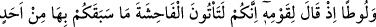
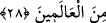
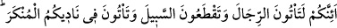
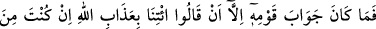
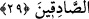

devam ettirmekle de ona iyilikte bulunmuştur.
Âyet-i kerime, kişinin neslinde velâyet ehli bir kimsenin bulunmasının dünya ve âhiret
saâdetlerinden olduğuna da işâret eder; çünkü onlar peygamberlerin vârisleridir. Zira
dünya ve din onlarla ayakta durur; müslümanlar için zâhirî ve mânevî terakkîler, onlar
sebebiyle ortaya çıkar; nurlar, mukarrabîn ruhlarının yanına ve a’lâ-yı illîyyine yayılır.
Böylece tam bir fahr ve şeref ile umumi bir menfaat hâsıl olur. Onların nesepleri, kan
bağıyla meydana gelmişse, bu böyledir. Şayet nesepleri dînî ise, Allah’ın büyük bir
nimeti ve lütfu olarak mutlaka temiz evlâd ve torunlar olurlar.
Beyit:
Allah’ın, kullarına nimetleri çoktur.
En üstünü, hayırlı ve sâlih evlâdlardır.
28. Lût’u da (gönderdik). O, kavmine demişti ki: Gerçekten siz, daha önce hiçbir
milletin yapmadığı bir hayâsızlığı yapıyorsunuz!
Ey Muhammed, kavmine hatırlat ki, biz senden önce “Lût’u da (gönderdik). O,”
kötülükler işleyen “kavmine demişti ki: Gerçekten siz, daha önce hiçbir milletin
yapmadığı bir hayâsızlığı yapıyorsunuz!” Yani, siz, çirkinlikte haddi aşıyor; son sınıra
varan fuhşu işliyor; “fahişe”ye geliyor ve son derece çirkin olan işleri yapıyorsunuz.
Burada, Lût (a.s.)’a sanki şöyle denilmiştir: “Bu şey, ne için aşırı çirkin ve fuhuş
olsun?” O da dedi ki: Sizden önce bu çirkinliği hiç kimse işlememiştir. Yani, kötülük ve
çirkinlikteki ifrat ve aşırılığından dolayı hiç kimse bunu yapmağa cür’et edememiştir.
Ayrıca bu, insan nefsi ve tabiatının da nefret duyduğu şeylerdendir.
Derler ki: Lût kavminden önce, nice asırlar ve nesiller geçmiş olmasına rağmen bir
erkek diğer bir erkekle asla cinsî münâsebette (livâta) bulunmamıştır.
29. (Bu ilâhî ikazdan sonra hâla) siz, ille de erkeklere yaklaşacak, yol kesecek
ve toplantılarınızda edepsizlikler yapacak mısınız! Kavminin cevabı ise, şöyle
demelerinden ibaret oldu: (Yaptıklarımızın kötülüğü ve azâba uğrayacağımız
konusunda) doğru söyleyenlerden isen, Allah’ın azâbını getir bize!
“(Bu ilâhî ikazdan sonra hâla) siz, ille de erkeklere yaklaşacak, yol kesecek...”